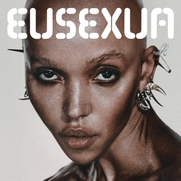
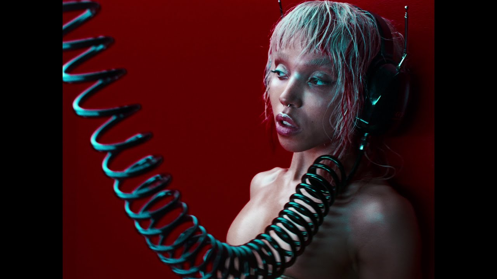

| Índice |
|---|
| 1. Sobre |
| 1.1. Biografia |
| 2. Era atual |
| 3. Último vídeoclipe |
Tahliah Debrett Barnett, nasceu em Cheltenham, Gloucestershire. Descendente de pai jamaicano e mãe inglesa, Barnett não conheceu o pai, um dançarino de jazz, até completar 18 anos, tendo sido criada pelo padrasto e pela mãe, que costumava trabalhar como dançarina e ginasta. Cresceu em Gloucestershire o qual Barnnett descreve como "um lugar no meio do nada". Ela frequentou a St Edward's School, em Cheltenham, uma escola católica privada. Vinda de uma família de baixa renda, sua educação foi paga através de bolsas de estudo. Aos 17 anos, mudou-se para a parte Sul de Londres para seguir carreira de dançarina. Trabalhou como dançarina de apoio para videos musicas de artistas como Kylie Minogue, Plan B, Ed Sheeran, Taio Cruz, Dionne Bromfield, Jessie J e Wretch 32.

O dia 24 de janeiro de 2025 foi a data escolhida pela
cantora FKA twigs para o lançamento de “EUSEXUA”, novo álbum de estúdio.
O LP, gestado ao longo dos últimos anos, foi definido pela própria em uma
carta aberta como sua “obra-prima, o núcleo de sua criação artística” até a presente data.
‘EUSEXUA’ nasceu entre rabiscos, escrito nas costas da minha mão em
um banheiro durante uma rave em Praga, ‘Neste quarto de tolos NÓS CRIAMOS
ALGO JUNTOS’ e nós fazemos. Nós que dançávamos, que suamos, nos beijamos,
fizemos amor ao som pulsante da cultura. ‘EUSEXUA’ é uma prática, ‘EUSEXUA’
é um estado de ser, ‘EUSEXUA’ é o auge da experiência humana”, disse em nota.
Junto ao anúncio, a cantora também liberou a capa do LP e um single inédito,
que dá título à obra.
'EUSEXUA' será o primeiro álbum de FKA twigs desde que 'MAGDALENE'
chegou em novembro de 2019. Sua mixtape 'CAPRISONGS' foi lançada em janeiro de 2022.

"Perfect Stranger" - FKA Twigs (2024)